Panduan Lengkap Pengguna & Silabus Pembelajaran
Satu portal koding asinkronus interaktif mandiri untuk jenjang SD, SMP, dan SMA. Pelajari cara masuk, navigasi materi, mengerjakan kuis, mengumpulkan proyek, hingga mengklaim sertifikat kelulusan resmi.
Akses Instan Tanpa Password
Cukup cari nama sekolah dan pilih email siswa terdaftar untuk langsung masuk ke kelas.
Modul Video & Slide Interaktif
Materi terkurasi bertahap dari pemula mutlak hingga proyek aplikasi mandiri yang menarik.
Kuis & Mini Project Mandiri
Evaluasi ramah less-strict tanpa rasa takut gagal, disertai umpan balik penjelasan instan.
Sertifikat & Transkrip Resmi
Dapatkan dokumen kelulusan 2 halaman berstempel timbul 3D resmi UOB Indonesia & Ruangguru.
Spesifikasi Perangkat & Mobile Gentle Advisory
Panduan perangkat yang disarankan untuk kenyamanan belajar koding mandiri
-
1
Perangkat Utama yang Sangat Disarankan: Laptop / Komputer
Gunakan Laptop, PC Desktop, atau Chromebook dengan resolusi layar minimal 1024×768 px. Aktivitas memprogram (Scratch, App Inventor, Google Colab) membutuhkan keyboard dan layar yang cukup leluasa.
-
2
Browser Modern yang Didukung Penuh
Disarankan menggunakan Google Chrome atau Microsoft Edge versi terbaru. Pastikan JavaScript aktif dan cookies diizinkan agar progres tersimpan aman.
-
3
Mobile Gentle Advisory Modal (Jika Dibuka di HP)
Jika siswa membuka link via smartphone, sistem secara otomatis menampilkan dialog ramah (*Gentle Advisory*) yang menyarankan beralih ke laptop tanpa memblokir akses siswa.
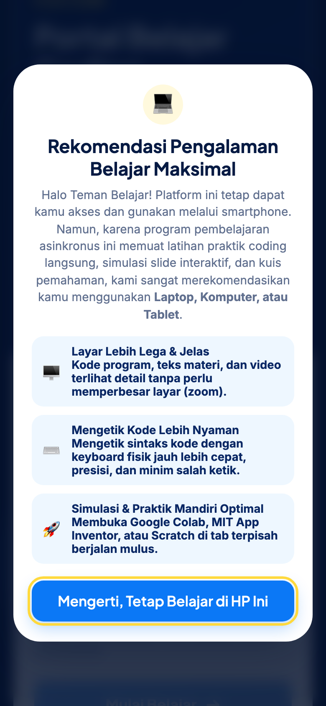
Membuka Portal & Mencari Nama Sekolah Mitra
Satu portal terpusat melayani seluruh sekolah penerima beasiswa UOB My Digital Space
-
A
Akses Alamat URL Portal LMS
Buka web browser dan kunjungi alamat URL portal resmi yang dibagikan oleh fasilitator (misal: link server atau domain Vercel LMS).
-
B
Pencarian Cerdas Combobox Sekolah
Klik kolom "Sekolah Mitra / Kelas" dan cukup ketikkan 2–3 huruf kata kunci nama sekolahmu (contoh: ketik "andalus" untuk SD Al Andalus, atau "batam" untuk SMAN 20 Batam).
-
C
Auto-Detect Jenjang & Badge Warna
Sistem secara otomatis mendeteksi jenjang belajar siswa dan menyematkan badge warna: SD, SMP, atau SMA.
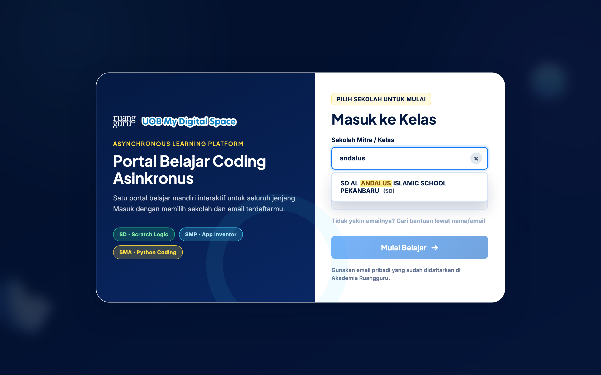
Memilih Akun Siswa & Masuk ke Kelas Belajar
Akses instan aman tanpa perlu mengingat kata sandi yang rumit
-
A
Kolom Email Otomatis Aktif
Segera setelah sekolah dipilih, kolom "Email terdaftar di Akademia" akan terbuka dan menampilkan daftar nama seluruh siswa di sekolah tersebut.
-
B
Pilih atau Ketik Nama / Email
Cukup ketik namamu (contoh: ketik "raffa" atau "intan") lalu klik nama/emailmu pada daftar dropdown yang muncul.
-
C
Klik Tombol 3D "Masuk ke Kelas"
Tekan tombol emas "Masuk ke Kelas". Dashboard belajarmu akan langsung termuat lengkap dengan progres terakhir yang pernah kamu selesaikan.
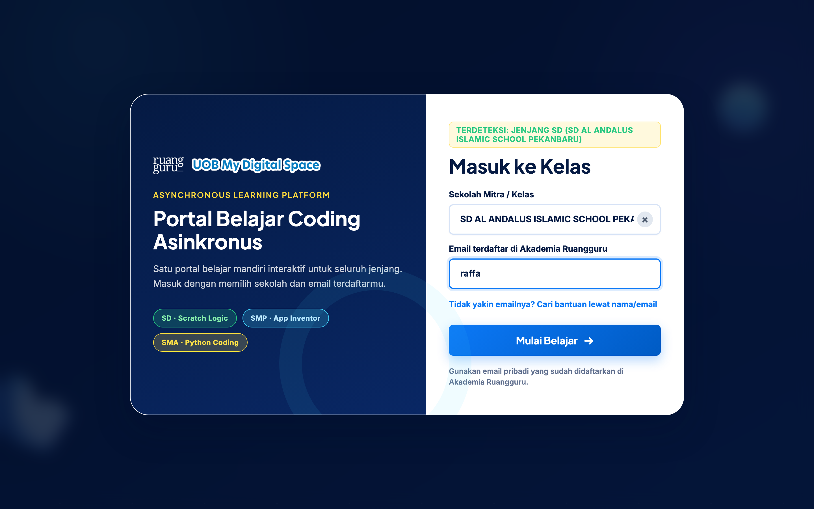
Matriks Pembelajaran Abridged: SD, SMP, & SMA
Rincian komprehensif jumlah modul, total materi, video tutorial, slide bacaan, kuis, dan mini project per jenjang
| Parameter Pembelajaran | SD · Scratch Logic | SMP · App Inventor | SMA · Python Coding |
|---|---|---|---|
| Sasaran Jenjang & Kelas | Kelas 4 – 6 SD (Upper Primary) | Kelas 7 – 9 SMP (Middle School) | Kelas 10 – 12 SMA/SMK (High School) |
| Lingkungan Koding / Platform | Editor Web Scratch Resmi MIT Lab | MIT App Inventor 2 Web & Android | Google Colaboratory (Python 3) |
| Jumlah Modul Pembelajaran | 4 Modul (Modul 0 s.d. 3) | 6 Modul (Modul 0 s.d. 5) | 6 Modul (Modul 0 s.d. 5) |
| Total Step / Materi Misi | 18 Step Misi Terpadu | 36 Step Misi Terpadu | 36 Step Misi Terpadu |
| Jumlah Video Pembelajaran | 17 Video Tutorial Kak Laras | 24 Video Interaktif Praktik | 23 Video Panduan Logika & Sintaks |
| Jumlah Slide Bacaan Interaktif | 1 Slide Pengantar (Bridge Intro) | 4 Slide Fondasi & Konsep Flowchart | 6 Slide Panduan Colab & Struktur Data |
| Jumlah Kuis Pemahaman Pop-up | 18 Kuis (1 kuis di setiap step) | 46 Kuis Uji Pemahaman Blok | 59 Kuis Uji Logika & Sintaks Python |
| Mini Project / Tantangan Mandiri | 3 Proyek Game Scratch di Editor | 8 Mini Project yang Dikumpulkan | 7 Mini Project yang Dikumpulkan |
| Syarat Klaim Sertifikat Resmi | Menuntaskan 100% (18 dari 18 Materi) | Menuntaskan 100% (36 dari 36 Materi) | Menuntaskan 100% (36 dari 36 Materi) |
Rincian Modul & Daftar Mini Project yang Dikumpul
Daftar judul modul pembelajaran dan tantangan praktik mandiri yang bisa disubmit siswa di setiap jenjang
4 Modul · 18 Step Materi
17 Video Tutorial + 1 Slide Pengantar
- Modul 0: Kenalan dengan Scratch 1 Slide · Akses Editor Resmi MIT
- Modul 1: About Me (Karakter & Suara) 7 Video Tutorial Kak Laras
- Modul 2: Racing Car Game 6 Video Tutorial Balap & Kemudi
- Modul 3: Increase Your Earnings 4 Video Tutorial Proyek Capstone
6 Modul · 36 Step Materi
24 Video + 4 Slide + 8 Mini Project
- Modul 0: Orientasi Platform App Inventor 4 Video · 1 Slide Bacaan
- Modul 1: Logika Instruksi & Input Aman 📌 Mini Project Form Aman & Cek Pesan Aman
- Modul 2: Percabangan Blok If-Else 📌 FINAL PROJECT Percabangan
- Modul 3: Otomasi & Fungsi (Procedures) 📌 Mini Project Kalkulator Prosedur
- Modul 4: Penyimpanan Lokal TinyDB 📌 Mini Project Tiny DB & Mini Project C
- Modul 5: Solusi Digital Capstone 📌 Merancang Solusi & Final Project App
6 Modul · 36 Step Materi
23 Video + 6 Slide + 7 Mini Project
- Modul 0: Fondasi Python & Google Colab 1 Video · 2 Slide Panduan Colab
- Modul 1: Fondasi Data & Input Pengguna 1 Video · 1 Slide Konversi Logika
- Modul 2: Logika Percabangan (If-Else) 📌 Smart Budget & Risk Planner
- Modul 3: Loops & Functions (Fungsi Modular) 📌 Mini Project Optimasi & Fungsi Modular
- Modul 4: Error Handling & Dictionary 📌 Safe Transaction, Safe Input & Debugging
- Modul 5: Capstone Financial Literacy App 📌 Menyatukan Kode Program (App Utuh)
Mengenal Dashboard Belajar Beranda Siswa
Tampilan utama setelah masuk kelas: profil siswa, asal sekolah, dan status misi aktif
-
1
Topbar Profil & Asal Sekolah
Bagian atas menampilkan nama lengkap siswa, nama sekolah mitra, badge jenjang koding resmi, serta tombol keluar akun.
-
2
Area Media Pembelajaran Terpusat
Materi aktif langsung terbuka di tengah layar: video tutorial YouTube interaktif atau slide bacaan tanpa perlu membuka tab baru.
-
3
Progress Bar Misi Real-Time
Memperlihatkan jumlah materi yang tuntas secara akurat (misal: "Progres Misi: 1 dari 18 Materi").
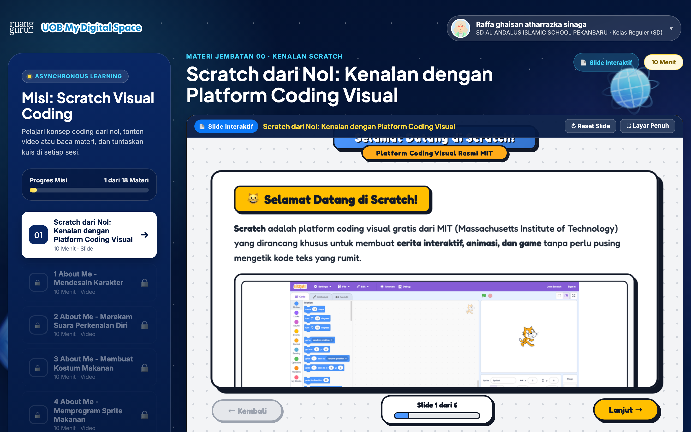
Navigasi Sidebar Misi & Tiga Indikator Status
Sistem scaffolding materi bertahap dengan indikator visual yang jelas dan terstruktur
-
✓
Centang Hijau (✓) — Materi Tuntas Selesai
Menandakan video/slide materi dan kuis pemahaman telah selesai dikerjakan dengan benar. Siswa dapat mengklik kembali kapan saja untuk mengulang materi.
-
▶
Tombol Play Biru (▶) — Materi Sedang Aktif
Menandakan materi misi yang saat ini sedang dibuka dan dipelajari oleh siswa di area konten utama.
-
🔒
Gembok Abu-abu (🔒) — Materi Terkunci
Materi selanjutnya masih terkunci rapi demi menjaga alur belajar berurutan. Gembok akan terbuka otomatis begitu kuis materi aktif selesai!
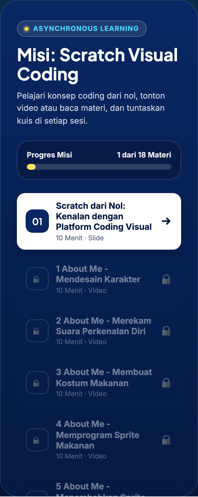
Membaca Slide Interaktif & Rangkuman Konsep
Fondasi konsep visual yang ringkas dan mudah dipahami sebelum memprogram
-
1
Slide Konseptual Terstruktur
Pada materi bertipe slide bacaan, siswa dapat membaca materi ringkas berisi ilustrasi konsep, pengantar alat koding, dan tips keamanan digital.
-
2
Navigasi Halaman Slide yang Mudah
Gunakan tombol navigasi "Halaman Sebelumnya" dan "Halaman Selanjutnya" di bawah slide untuk membaca langkah demi langkah.
-
3
Preview Kode & Rangkuman Materi
Bagian samping dilengkapi kartu preview kode/balok sintaks serta kotak rangkuman poin penting materi yang sedang dipelajari.
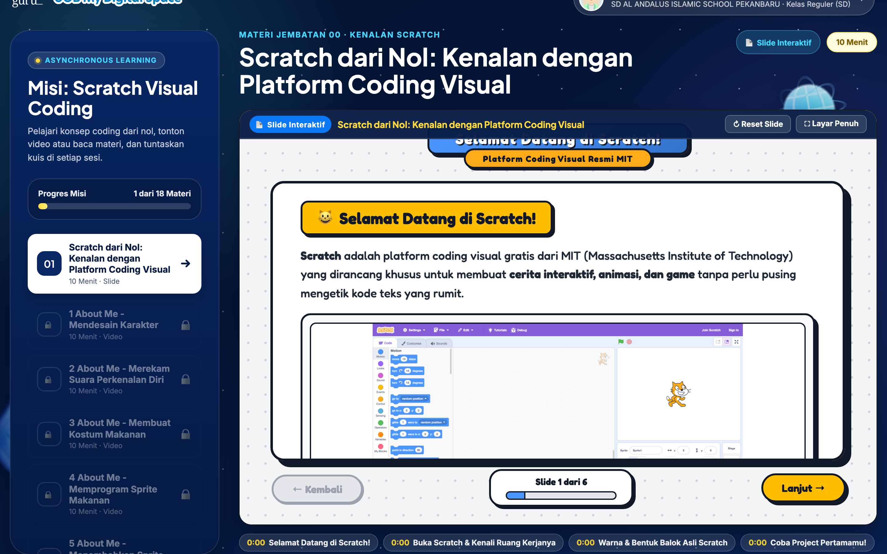
Menonton Video Modul dengan Pemutar Pintar
Video tutorial terkurasi resmi tanpa iklan, dilengkapi fitur bookmark dan putar ulang
-
1
Pemutar Video YouTube Bebas Iklan
Video terkurasi diputar langsung di dalam kontainer LMS tanpa membuka tab baru, menjaga konsentrasi belajar siswa tetap fokus.
-
2
Tombol Pintas "Tonton Ulang 30 Detik"
Jika ada baris kode atau blok logika yang terlewat, klik tombol "⏪ Tonton Ulang 30 Detik" untuk memutar mundur secara instan tanpa menggeser timeline secara manual.
-
3
Bookmark Penanda Topik Materi
Bagian bawah video menyediakan tombol penanda topik materi (misal: Menyiapkan Blok Karakter, Menambah Kode Gerak) untuk melompat langsung ke segmen penting.
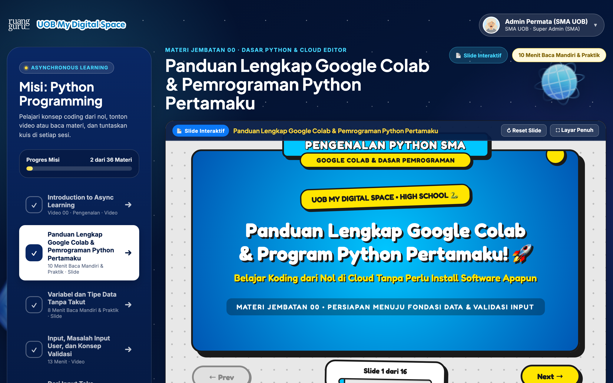
Menjawab Kuis Interaktif Ramah Pemula
Evaluasi pemahaman konsep less-strict untuk membangun rasa percaya diri siswa
-
1
Pop-Up Kuis Otomatis Terbuka
Begitu materi selesai dipelajari, dialog kuis interaktif akan muncul secara halus di tengah layar tanpa menyegarkan halaman.
-
2
Kartu Jawaban 3D Taktil (A, B, C, D)
Pilihan jawaban disajikan dalam kartu berdesain skeuomorphic 3D dengan tombol pilihan yang empuk dan responsif saat diklik.
-
3
Bento Box Tracker Status Soal
Strip kotak nomor soal di bawah kuis memperlihatkan soal mana yang sedang aktif, sudah dijawab, atau memerlukan perhatian.
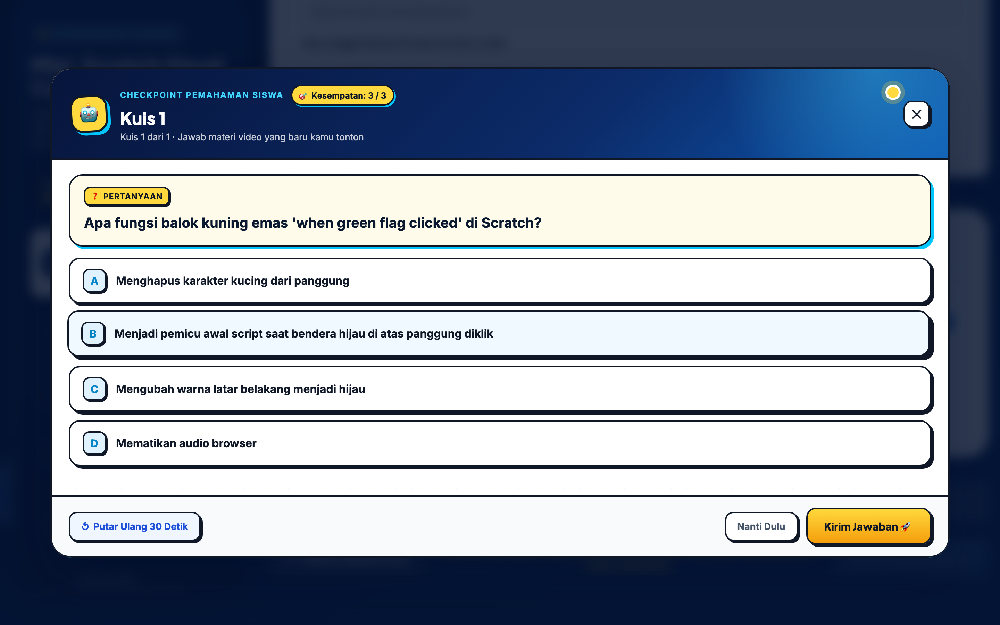
Menerima Umpan Balik & Membuka Materi Selanjutnya
Penjelasan langsung jawaban benar dan aktivasi materi misi berikutnya secara instan
-
1
Umpan Balik Hijau dengan Penjelasan
Saat jawaban benar dipilih, kotak umpan balik berwarna hijau langsung tampil memuji usaha siswa dan menjelaskan alasan logis di balik jawaban tersebut.
-
2
Tombol 3D "Materi Selanjutnya" Terbuka
Tombol emas "Materi Selanjutnya" langsung menyala aktif, memungkinkan siswa berpindah ke materi bab berikutnya dengan satu klik.
-
3
Gembok Sidebar Otomatis Terbuka
Pada sidebar navigasi, status materi yang baru diselesaikan berubah menjadi centang hijau (✓), dan materi berikutnya terbuka dari gembok (🔒 menjadi ▶).
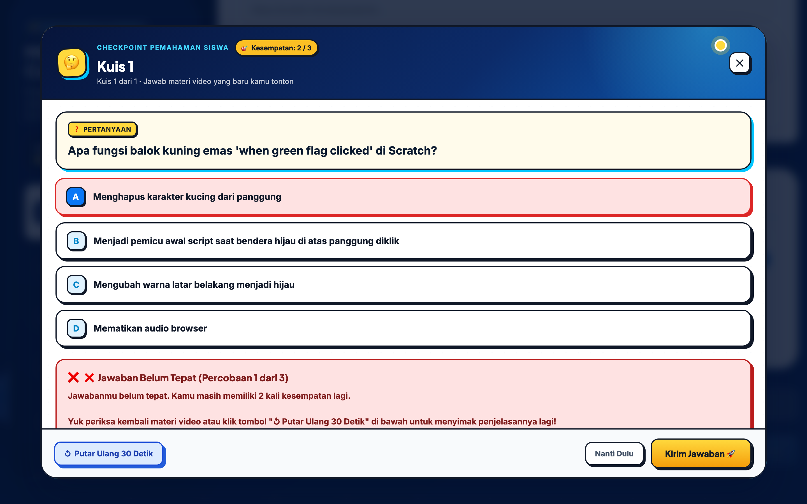
Mengerjakan & Mengumpulkan Tantangan Mini Project
Praktik coding langsung tanpa memblokir progres belajar materi selanjutnya
-
1
Tantangan Mandiri Non-Gating
Mini project dirancang fleksibel (*non-gating*). Siswa bebas mengerjakan dan mengumpulkan tugas kapan saja tanpa membuat materi berikutnya terkunci.
-
2
Editor Kode Python di Browser (SMA)
Untuk jenjang SMA, tersedia editor kode Python terpasang langsung di dalam panel tugas untuk menguji logika program sebelum disubmit.
-
3
Tiga Pilihan Opsi Pengumpulan
Siswa dapat memilih cara pengumpulan paling nyaman:
• Tautan Google Colab / GitHub / App Inventor / Scratch Web.
• Unggah File Kode (.py, .aia, .sb3).
• Ketik teks kode langsung di editor portal.
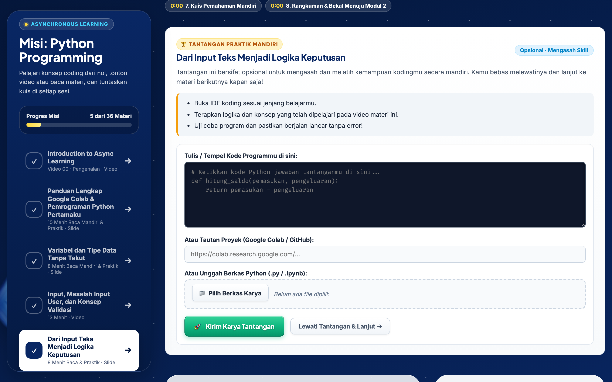
Mengklaim Sertifikat Kelulusan & Transkrip Resmi
Dokumen resmi 2 halaman berstandar tinggi berstempel timbul emas 3D tanda kelulusan siswa
-
1
Pembukaan Menu Sertifikat Otomatis
Setelah 100% materi misi selesai, menu "🎓 Sertifikat & Rekap Nilai" di bagian bawah sidebar akan terbuka dan menyala hijau.
-
2
Halaman 1: Sertifikat Kelulusan (Landscape A4)
Sertifikat resmi berbingkai emas ornamen klasik, nomor seri verifikasi unik (misal: UOB-MDS-SMA-2026-XXXXXX), dan stempel timbul emas 3D resmi UOB x Ruangguru.
-
3
Halaman 2: Transkrip Nilai Akademik Full-Length (Portrait A4)
Memuat rekapitulasi lengkap seluruh daftar materi, persentase kehadiran 100%, status pengerjaan kuis/proyek, serta matriks 4 kompetensi koding siswa.
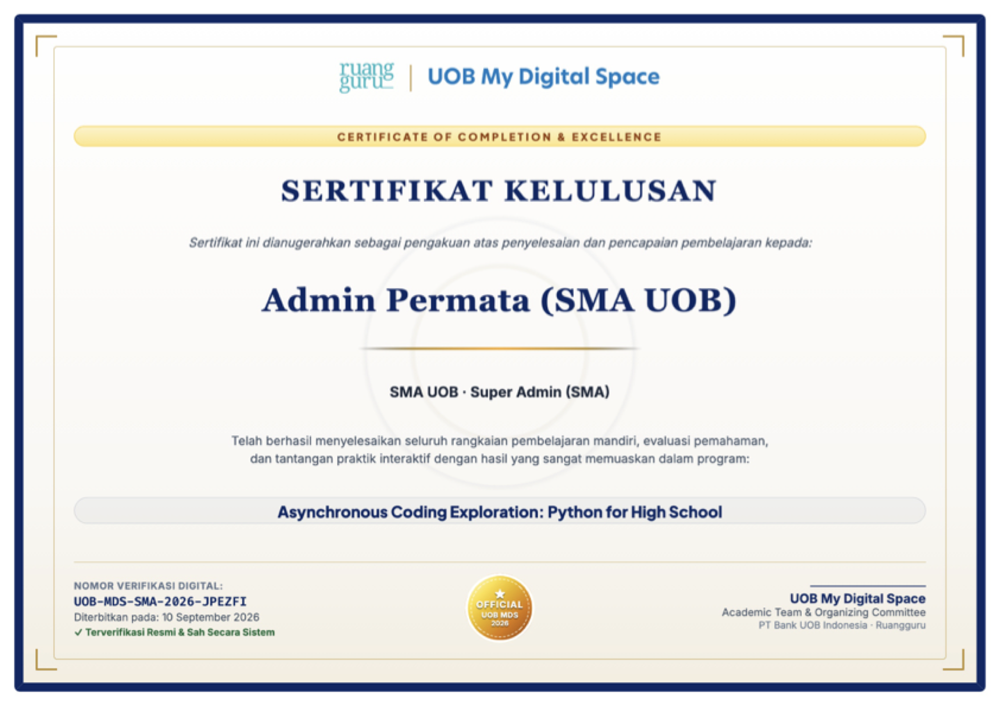
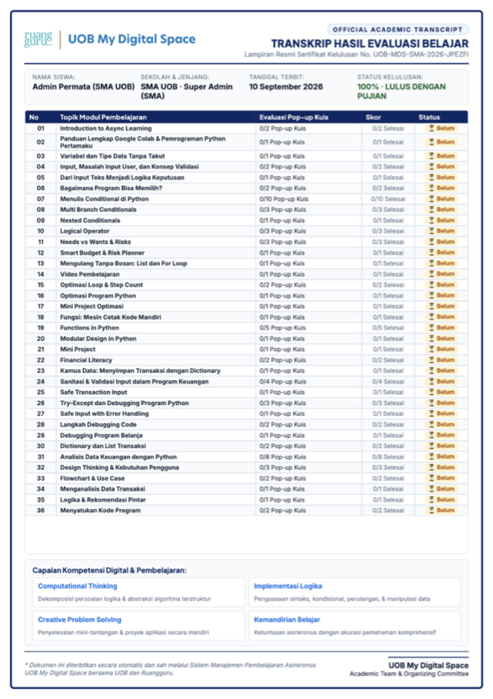
Tips Sukses Belajar Asinkron & Pusat Bantuan
Dukungan penuh untuk mendampingi perjalanan koding siswa hingga tuntas
-
💡
3 Tips Sukses Belajar Asinkron Mandiri
• Belajar Rutin: Alokasikan waktu 30–45 menit per sesi 2–3 kali seminggu.
• Praktik Langsung: Jangan hanya menonton; buka Scratch/Colab dan coba ketik kodenya sendiri.
• Ulangi Video Jika Perlu: Gunakan fitur *"Tonton Ulang 30 Detik"* saat menjumpai konsep logika baru. -
❓
Pertanyaan yang Sering Diajukan (FAQ)
• Apakah progres saya hilang jika laptop ditutup? Tidak, progres tersimpan otomatis di cloud dan browser.
• Apakah kuis bisa diulang? Bisa, siswa dapat mengulang kuis sampai paham tanpa rasa takut.
Pusat Bantuan & Layanan Fasilitator
Jika ada pertanyaan seputar akun, materi koding, atau kendala perangkat, hubungi guru pendamping sekolah atau tim akademik kami.